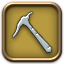

Disciplines of the Land
Disciplines of the Land
Профессия ботаника (botanist) включает в себя добычу ресурсов из всех форм растительного мира.
Это и сбор овощей и злаков, и уход за плодоносящими деревьями, и заготовка древесины, и многое другое.
Ботаники пытаются донести до других идею о мирном сосуществовании с растительным миром Эорзии и разумном использовании природных ресурсов.
Благодаря своей близости к природе ботаники почитают Nothica, богиню изобилия.
 Стартовое задание профессии
Стартовое задание профессии
- Активные и пассивные умения
- Общая информация
Все описания основаны на активных умениях и бонусах, полученных на 90 уровне.
Активные и пассивные умения
Классовые умения
Название умения |
Уровень получения |
Тип |
Время восстановления |
Стоимость GP |
Эффект |
|---|---|---|---|---|---|
Ролевые умения собирателей (gatherer)
Название умения |
Уровень получения |
Тип |
Время восстановления |
Эффект |
|---|---|---|---|---|

Triangulate |

Ур. 1 |
Способность | - | Показывает на миникарте ближайшие точки сбора mature trees и lush vegetation. Умение активируется автоматически, как только персонаж сменит класс на ботаника. |

Arbor Call |
Ур. 3 |
Способность | 20 сек. |
Позволяет персонажу обнаружить mature tree или lush vegetation, а также отображает на миникарте направление до ближайшей точки сбора в пределах зоны действия умения. Можно использовать только при активном умении Triangulate.
Продолжительность: 15 сек. |

Arbor Call II |
Ур. 5 |
Способность | 20 сек. |
Позволяет персонажу обнаружить высокоуровневое mature tree или lush vegetation, а также отображает на миникарте направление до ближайшей точки сбора в пределах зоны действия умения. Можно использовать только при активном умении Triangulate.
Продолжительность: 15 сек. |

Truth of Forests |
Ур. 46 |
Способность | - | Отображает на миникарте местоположение неизвестных, легендарных и скрытых mature trees and lush vegetation. |
* Ролевые умения (role actions) собирателей после изучения можно использовать на любом классе собирателей (gathering).
Пассивные умения
Название умения |
Уровень получения |
Эффект |
|---|---|---|

Auto Triangulate |

Ур. 2 |
Автоматически активирует эффект Triangulate при смене класса на ботаника (botanist). |

Tree Whisperer |
Ур. 11 |
Позволяет лучше определить свойства mature tree или patch of lush vegetation, благодаря чему персонаж повышает шанс сбора предметов при соблюдении условий. |

Tree Whisperer II |
Ур. 16 |
Позволяет лучше определить свойства mature tree или patch of lush vegetation, что увеличивает количество попыток сбора при соблюдении условий. |

Tree Whisperer III |
Ур. 21 |
Позволяет лучше определить свойства mature tree or patch или lush vegetation, что увеличивает количество получаемых предметов во время сбора при соблюдении условий. |

Tree Whisperer IV |
Ур. 26 |
Позволяет лучше определить свойства mature tree or patch или lush vegetation, что увеличивает количество получаемых предметов во время сбора при соблюдении условий. |

Auto Sneak |
Ур. 27 |
Автоматически активирует эффект Sneak при смене класса на ботаника. Эффект также автоматически активируется при смене области.
Sneak не будет автоматически активирован в зонах, где это умение не может быть использовано. |

Enhanced Twelve's Bounty |
Ур. 41 |
Умение Twelve's Bounty распространяется на crystals. |

Nymeia's Ward |
Ур. 42 |
С некоторой вероятностью увеличивает количество получаемых предметов во время сбора, включая crystals. |

Enhanced Twelve's Bounty II |
Ур. 50 |
Умение Twelve's Bounty распространяется на clusters. |

Tree Whisperer V
|
Ур. 53 |
Позволяет лучше определить свойства mature tree или patch of lush vegetation, что еще больше повышает шансы сбора при соблюдении условий. |

One with the Forest |
Ур. 60 |
Автоматически активирует эффект Truth of Forests при смене класса на ботаника. |

Bountiful Harvest Mastery
|
Ур. 68 |
Улучшает умение Bountiful Harvest до Bountiful Harvest II. |

Enhanced GP Regeneration
|
Ур. 70 |
Повышает базовую скорость регенерации GP на единицу. |

Enhanced Twelve's Bounty III |
Ур. 71 |
Увеличивает базовое количество получаемых во время сбора предметов от Twelve's Bounty на один. |

Enhanced GP Regeneration II |
Ур. 80 |
Повышает базовую скорость регенерации GP на два. При сборе повышает базовый уровень регенерации на один. |

Enhanced GP Regeneration III |
Ур. 83 |
Повышает базовую скорость регенерации GP на три. При сборе повышает базовый уровень регенерации на один. |

Enhanced Ageless Words |
Ур. 90 |
Дает умению Ageless Words 50% шанс на получение игроком эффекта Eureka Moment. |
Присоединиться к Discipline of the Land

Как только персонаж достигнет 10 уровня класса, который был выбран в начале игры, можно взять новое задание. Выполнив его, персонаж сможет вступить в гильдии других классов.
Чтобы стать ботаником, требуется найти и вступить в Botanists' Guild в Old Gridania (X:6.4 Y:8.3).
Для смены класса, после вступления в гильдию, необходимо экипировать инструмент нужного класса.
Шахтер и Ботаник: ключевые особенности
Disciples of the Land могут собирать полезные материалы в игровом мире, доступные их специализации.
Шахтеры - это класс собирателей, которые могут собирать руду и драгоценные металлы с mineral deposits и rocky outcrops.
Ботаники могут собирать древесину, фрукты и другие растительные продукты с mature trees и lush vegetation patches.
Повышение уровня этих классов расширит области сбора и поможет найти более редкие материалы.


Сбор
Как начать?
Шахтеры и ботаники могут собирать ресурсы в точках сбора, таких как mineral deposits и mature trees.
Класс персонажа определяет, в каких местах можно собирать ресурсы.
Найти новые места для сбора поможет умение шахтера Lay of the Land и умение ботаника Arbor Call.
Узнать, в каких местах можно получить те или иные предметы, можно из gathering log.
-

Miners: Mineral Deposits и Rocky Outcrops
(Чтобы собирать ресурсы с rocky outcrops, необходимо экипировать кувалду)
-

Botanists: Mature Trees и Lush Vegetation Patches
(Чтобы собирать ресурсы с lush vegetation patches, необходимо экипировать косу)
Советы по сбору

Выберите точку сбора и увидите какие предметы доступны для получения.

Выберите предмет, который хотите собрать.
Успех сбора зависит от рейтинга сбора (gathering rating). При сборе есть вероятность срабатывания эффекта Gatherer's Boon, который дает дополнительный предмет.

Пока вы собираете предметы из точки сбора, уменьшается количество попыток сбора независимо от успеха попытки. Использовать точку сбора можно до тех пор, пока не будут исчерпаны все попытки сбора.
Collectables
Шахтера и ботаник: collectable предметы

Как Disciple of the Land, вам может потребоваться обменивать предметы, называемые collectables.

Ценность данных предметов определяется с помощью collectability rating, чем он выше, тем более высокую награду вы получите при обмене.
Некоторые collectables предметы можно распылить для получения других полезных материалов с помощью умения aetherial reduction.
Тип предмета (collectable's type) и его collectability влияют на тип и количество предметов, на которые он распыляется.
Сбор collectables: шахтер и ботаник


Находясь на экране сбора, выберите предмет с меткой collectable, чтобы перейти в окно сбора collectable предметов. Отсюда вы можете собирать collectables.
Повышение Collectability с помощью with Scour
Есть три умения, которые можно использовать, чтобы повысить collectability предметов: Scour, Brazen Prospector/Woodsman и Meticulous Prospector/Woodsman.
Используйте умение "Collect" после выполнения одного из указанных ранее умений, чтобы собрать предмет с повышенным collectability.

(Пока вы используете collectable умения и собираете предметы из точки сбора, уменьшается количество попыток сбора независимо от успеха попытки. Использовать точку сбора можно до тех пор, пока не будут исчерпаны все попытки сбора)
Повышение Collectability с помощью Scrutiny и Collector's Standard

Применение умения Scrutiny повышает эффективность следующего примененного умения из Scour категории.

После применения умения из Scour категории, у вас есть шанс получить эффект Collector's Standard, который значительно повышает эффективность умений Brazen и Meticulous.